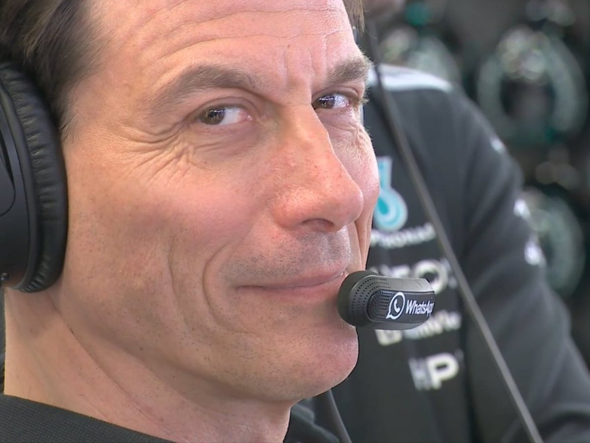

Analizando datos del paddock...
Espera, cruzando datos con la FIA...

Resulta que da igual lo que hayas contestado, la telemetría es clara: tienes la mente de un auténtico estratega multicampeón. Tu capacidad para analizar cada detalle, prever los escenarios y elegir sabiamente explica perfectamente por qué me das palizas absolutas e indiscutibles en el Fantasy de F1.
Tu inteligencia y visión de carrera están a otro nivel, dignas del dominio aplastante de Mercedes en la era híbrida. Simplemente, procesas la información mejor, ves oportunidades que los demás no ven y siempre vas dos pasos por delante en el paddock. ¡Eres la verdadera Jefa de Equipo!